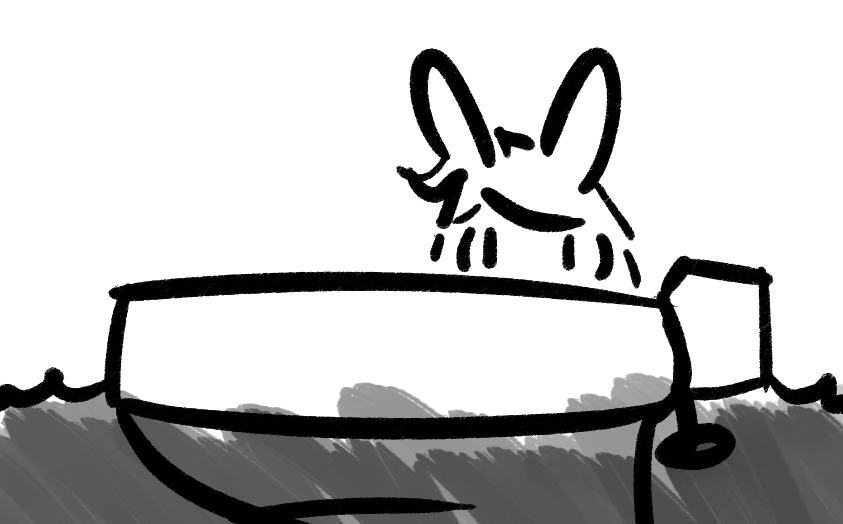

A boat me
My name is Kris Jones and I'm years old.
I live around Dayton, OH in the United States.
I am Agenderflux (link clicky)
and Autochorissexual (link clicky 2)
I use they/them/their pronouns.
More specific language preferences can be found at my pronouns.page.
I have combined-type Attention Deficit Hyperactivity Disoder (ADHD-C) and Generalised Anxiety Disorder (GAD).
Hobbies
I like to do:
Computer programming
Digital art
Listen to music
(and want to make some someday)
Play video games sometimes
(also wanna make one sometime perhaps)
Web video
(watching and may make some sometime)
Specific interests:
Programming: Web ([X]HTML/CSS, web JS), JS (Node),
dotNET (and Core) [C#, including ASP]
Digital art: Furries, abstract, graphic-design,
I guess font design goes here
Music: Punk rock, Alternative rock, Indie rock, Britpop
[Bands: Rise Against, Blur, blink-182, Green Day, Biffy Clyro, Stereophonics,
Ima Robot, Less Than Jake, Linkin Park, Billy Talent, some more I can't remember]
Video games: Story-based (Night in the Woods, Oneshot),
Arcade (Metal Slug, Ninjin), Puzzle (Puyo Puyo, Tetris),
Fighting (Rivals of Aether, MUGEN),
Racing (Forza Horizon, DiRT, Mario Kart)
Podcasts: Well There's Your Problem, Trashfuture, Lions Led by Donkeys, What a Hell of a Way to Die, Ten Thousand Posts, 5-4
Web video: Video-essay-style work (Hbomberguy, Tom Scott, Thought Slime), Games streamers (Vinesauce, TieTuesday),
General news-journalism and games-journalism (Vox, Polygon, James Stephanie Sterling), Lettuce Play (Bikdiponabus, TRG)